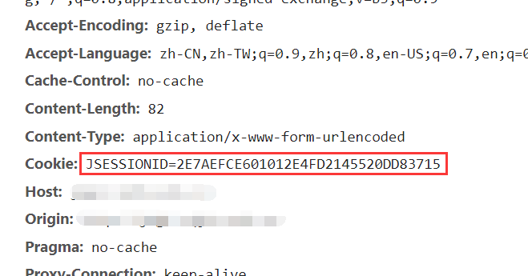
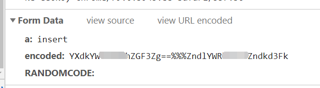
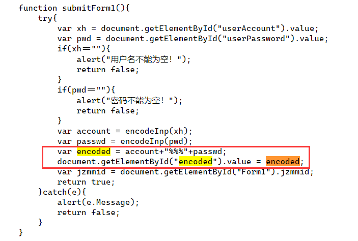
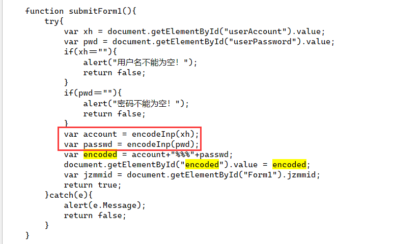
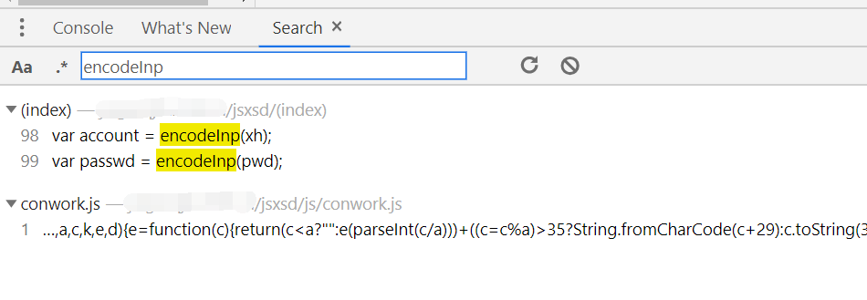
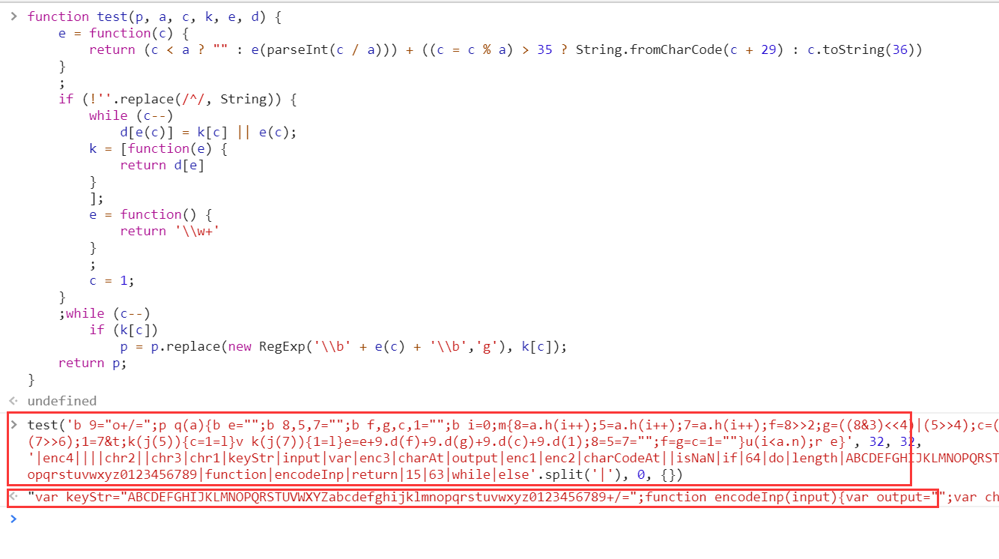
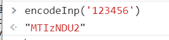

<!DOCTYPE html>
<html>
<head><meta name="generator" content="Hexo 3.9.0">
  <!-- hexo-inject:begin --><!-- hexo-inject:end --><meta charset="utf-8">
  <meta http-equiv="X-UA-Compatible" content="IE=edge">
  
  <title>学校教务系统登录前端加密分析 | uint128&#39;s Blog</title>
  <meta name="description" content>
  <meta name="keywords" content>
  <meta name="HandheldFriendly" content="True">
  <meta name="apple-mobile-web-app-capable" content="yes">
  <link rel="shortcut icon" href="/">
  <link rel="alternate" href="/atom.xml" title="uint128's Blog">
  <meta name="viewport" content="width=device-width, initial-scale=1, maximum-scale=1">
  <meta name="description" content="我又无聊了……学校教务系统登录前端加密分析">
<meta property="og:type" content="article">
<meta property="og:title" content="学校教务系统登录前端加密分析">
<meta property="og:url" content="https://uint128.com/2020/01/06/学校教务系统登录前端加密分析/index.html">
<meta property="og:site_name" content="uint128&#39;s Blog">
<meta property="og:description" content="我又无聊了……学校教务系统登录前端加密分析">
<meta property="og:locale" content="zh-cn">
<meta property="og:image" content="https://uint128.com/2020/01/06/学校教务系统登录前端加密分析/img-1.png">
<meta property="og:image" content="https://uint128.com/2020/01/06/学校教务系统登录前端加密分析/img-2.png">
<meta property="og:image" content="https://uint128.com/2020/01/06/学校教务系统登录前端加密分析/img-3.png">
<meta property="og:image" content="https://uint128.com/2020/01/06/学校教务系统登录前端加密分析/img-4.png">
<meta property="og:image" content="https://uint128.com/2020/01/06/学校教务系统登录前端加密分析/img-5.png">
<meta property="og:image" content="https://uint128.com/2020/01/06/学校教务系统登录前端加密分析/img-6.png">
<meta property="og:image" content="https://uint128.com/2020/01/06/学校教务系统登录前端加密分析/img-7.png">
<meta property="og:updated_time" content="2020-01-06T04:26:31.748Z">
<meta name="twitter:card" content="summary">
<meta name="twitter:title" content="学校教务系统登录前端加密分析">
<meta name="twitter:description" content="我又无聊了……学校教务系统登录前端加密分析">
<meta name="twitter:image" content="https://uint128.com/2020/01/06/学校教务系统登录前端加密分析/img-1.png">
    
  <link href="https://fonts.googleapis.com/css?family=Inconsolata|Titillium+Web" rel="stylesheet">
  <link href="https://fonts.googleapis.com/css?family=Roboto+Mono" rel="stylesheet">
  <link href="//cdn.bootcss.com/node-waves/0.7.5/waves.min.css" rel="stylesheet">
  <link rel="stylesheet" href="/style.css">
  <script>
    function setLoadingBarProgress(num) {
      document.getElementById('loading-bar').style.width=num+"%";
    }
  </script>
  <script src="/js/md5.js"></script>
<link rel="alternate" href="/atom.xml" title="uint128's Blog" type="application/atom+xml"><!-- hexo-inject:begin --><!-- hexo-inject:end -->
</head>
</html>
<body>
  <!-- hexo-inject:begin --><!-- hexo-inject:end --><div id="loading-bar-wrapper">
  <div id="loading-bar"></div>
</div>


  <script>setLoadingBarProgress(20)</script> 
  <header class="l_header">
	<div class='wrapper'>
		<div class="nav-main container container--flex">
			<a class="logo flat-box" href='/' >
				uint128's Blog
			</a>
			<div class='menu'>
				<ul class='h-list'>
					
						<li>
							<a class='flat-box nav-home' href='/'>
								Home
							</a>
						</li>
					
						<li>
							<a class='flat-box nav-archives' href='/archives'>
								Archives
							</a>
						</li>
					
						<li>
							<a class='flat-box nav-about' href='/about'>
								About
							</a>
						</li>
					
				</ul>
				<div class='underline'></div>
			</div>
			
				<div class="m_search">
					<form name="searchform" class="form u-search-form">
						<input type="text" class="input u-search-input" placeholder="Search" />
						<span class="icon icon-search"></span>
					</form>
				</div>
			
			<ul class='switcher h-list'>
				
					<li class='s-search'><a href='javascript:void(0)'><span class="icon icon-search flat-box"></span></a></li>
				
				<li class='s-menu'><a href='javascript:void(0)'><span class="icon icon-menu flat-box"></span></a></li>
			</ul>
		</div>
		
		<div class='nav-sub container container--flex'>
			<a class="logo" class="flat-box" href='javascript:void(0)'>
				Word of Forks
			</a>

			<ul class='switcher h-list'>
				<li class='s-comment'><a href='javascript:void(0)'><span class="icon icon-chat_bubble_outline flat-box"></span></a></li>
				<li class='s-top'><a href='javascript:void(0)'><span class="icon icon-arrow_upward flat-box"></span></a></li>
				<li class='s-toc'><a href='javascript:void(0)'><span class="icon icon-format_list_numbered flat-box"></span></a></li>
			</ul>
		</div>
	</div>
</header>
<aside class="menu-phone">
	<nav>
		
			<a href="/" class="nav-home nav">
				Home
			</a>
		
			<a href="/archives" class="nav-archives nav">
				Archives
			</a>
		
			<a href="/about" class="nav-about nav">
				About
			</a>
		
	</nav>
</aside>

    <script>setLoadingBarProgress(40);</script>
  <div class="l_body">
    <div class='container clearfix'>
      <div class='l_main'>
        <article id="post-学校教务系统登录前端加密分析"
  class="post white-box article-type-post"
  itemscope itemprop="blogPost">
	<section class='meta'>
	<h2 class="title">
  	<a href="/2020/01/06/学校教务系统登录前端加密分析/">
    	学校教务系统登录前端加密分析
    </a>
  </h2>
	<time>
	  1月 6, 2020
	</time>
	
	</section>
	
		<section class="toc-wrapper"></section>
	
	<section class="article typo">
  	<div class="article-entry" itemprop="articleBody">
    	<p>我又无聊了……学校教务系统登录前端加密分析</p>
<a id="more"></a>

<p>突然想做一个方便自己的课表程序，课表的数据在教务系统里，所以就想写个爬虫程序，从教务系统里爬取课表。<br>首先是要通过模拟表单提交，登录进教务系统。<br>清空Cookies、打开开发者工具、开启网络分析（其实就是抓包）、刷新页面……基本操作，没有什么问题。</p>
<p>分析一下Cookie组成，非常简单，就一个Cookie。</p>
<p></p>
<p>验证码地址也很简单，没有什么奇怪的参数。</p>
<figure class="highlight plain"><table><tr><td class="gutter"><pre><span class="line">1</span><br></pre></td><td class="code"><pre><span class="line">Request URL: http://马赛克/jsxsd/verifycode.servlet</span><br></pre></td></tr></table></figure>

<p>再分析一下表单提交的数据……</p>
<p>居然有加密！这个破系统居然还有加密！</p>
<p></p>
<p>问题不大，登录入口那么重要，有加密也挺正常，先从源代码里找找有没有“<strong>encoded</strong>”。</p>
<p></p>
<p>一下子就找到了，加密方式是先加密学号、再加密密码，再把密文拼接起来，中间用“%%%”分隔。<br>而且学号和密码的加密方法是同一种方法，加密函数也一起找到了，就叫做“<strong>encodeInp</strong>”。</p>
<p></p>
<p>在开发人员工具里按下<strong>Ctrl+Shift+F</strong>,打开全局搜索，找一找这个叫做“<strong>encodeInp</strong>”的函数。<br>很轻松地找到了线索。</p>
<p></p>
<p>这一整个js文件里，就放了这一段代码。<br>虽然这段代码里没有出现任何“<strong>encodeInp</strong>”字样，但是凭借我的直觉，并且我相信chrome不出错，这一段就是我要找的代码。</p>
<figure class="highlight javascript"><table><tr><td class="gutter"><pre><span class="line">1</span><br><span class="line">2</span><br><span class="line">3</span><br><span class="line">4</span><br><span class="line">5</span><br><span class="line">6</span><br><span class="line">7</span><br><span class="line">8</span><br><span class="line">9</span><br><span class="line">10</span><br><span class="line">11</span><br><span class="line">12</span><br><span class="line">13</span><br><span class="line">14</span><br><span class="line">15</span><br><span class="line">16</span><br><span class="line">17</span><br><span class="line">18</span><br><span class="line">19</span><br><span class="line">20</span><br><span class="line">21</span><br><span class="line">22</span><br><span class="line">23</span><br></pre></td><td class="code"><pre><span class="line"><span class="built_in">eval</span>(<span class="function"><span class="keyword">function</span>(<span class="params">p, a, c, k, e, d</span>) </span>&#123;</span><br><span class="line">    e = <span class="function"><span class="keyword">function</span>(<span class="params">c</span>) </span>&#123;</span><br><span class="line">        <span class="keyword">return</span> (c &lt; a ? <span class="string">""</span> : e(<span class="built_in">parseInt</span>(c / a))) + ((c = c % a) &gt; <span class="number">35</span> ? <span class="built_in">String</span>.fromCharCode(c + <span class="number">29</span>) : c.toString(<span class="number">36</span>))</span><br><span class="line">    &#125;</span><br><span class="line">    ;</span><br><span class="line">    <span class="keyword">if</span> (!<span class="string">''</span>.replace(<span class="regexp">/^/</span>, <span class="built_in">String</span>)) &#123;</span><br><span class="line">        <span class="keyword">while</span> (c--)</span><br><span class="line">            d[e(c)] = k[c] || e(c);</span><br><span class="line">        k = [<span class="function"><span class="keyword">function</span>(<span class="params">e</span>) </span>&#123;</span><br><span class="line">            <span class="keyword">return</span> d[e]</span><br><span class="line">        &#125;</span><br><span class="line">        ];</span><br><span class="line">        e = <span class="function"><span class="keyword">function</span>(<span class="params"></span>) </span>&#123;</span><br><span class="line">            <span class="keyword">return</span> <span class="string">'\\w+'</span></span><br><span class="line">        &#125;</span><br><span class="line">        ;</span><br><span class="line">        c = <span class="number">1</span>;</span><br><span class="line">    &#125;</span><br><span class="line">    ;<span class="keyword">while</span> (c--)</span><br><span class="line">        <span class="keyword">if</span> (k[c])</span><br><span class="line">            p = p.replace(<span class="keyword">new</span> <span class="built_in">RegExp</span>(<span class="string">'\\b'</span> + e(c) + <span class="string">'\\b'</span>,<span class="string">'g'</span>), k[c]);</span><br><span class="line">    <span class="keyword">return</span> p;</span><br><span class="line">&#125;(<span class="string">'b 9="o+/=";p q(a)&#123;b e="";b 8,5,7="";b f,g,c,1="";b i=0;m&#123;8=a.h(i++);5=a.h(i++);7=a.h(i++);f=8&gt;&gt;2;g=((8&amp;3)&lt;&lt;4)|(5&gt;&gt;4);c=((5&amp;s)&lt;&lt;2)|(7&gt;&gt;6);1=7&amp;t;k(j(5))&#123;c=1=l&#125;v k(j(7))&#123;1=l&#125;e=e+9.d(f)+9.d(g)+9.d(c)+9.d(1);8=5=7="";f=g=c=1=""&#125;u(i&lt;a.n);r e&#125;'</span>, <span class="number">32</span>, <span class="number">32</span>, <span class="string">'|enc4||||chr2||chr3|chr1|keyStr|input|var|enc3|charAt|output|enc1|enc2|charCodeAt||isNaN|if|64|do|length|ABCDEFGHIJKLMNOPQRSTUVWXYZabcdefghijklmnopqrstuvwxyz0123456789|function|encodeInp|return|15|63|while|else'</span>.split(<span class="string">'|'</span>), <span class="number">0</span>, &#123;&#125;))</span><br></pre></td></tr></table></figure>

<p>这段代码里用到了<strong>eval</strong>函数，大胆猜测这个“<strong>eval</strong>”所执行的代码会生成一个名为“<strong>encodeInp</strong>”的函数。<br>不然教务系统的js代码不可能成功调用<strong>encodeInp</strong>这个函数。<br>进一步观察，不难看出这段代码就是一个匿名函数的调用，而且把函数的定义和函数的调用写在了一起。<br>给匿名函数取个名字，分离出函数的定义和函数的调用这两个部分。</p>
<p>匿名函数：</p>
<figure class="highlight javascript"><table><tr><td class="gutter"><pre><span class="line">1</span><br><span class="line">2</span><br><span class="line">3</span><br><span class="line">4</span><br><span class="line">5</span><br><span class="line">6</span><br><span class="line">7</span><br><span class="line">8</span><br><span class="line">9</span><br><span class="line">10</span><br><span class="line">11</span><br><span class="line">12</span><br><span class="line">13</span><br><span class="line">14</span><br><span class="line">15</span><br><span class="line">16</span><br><span class="line">17</span><br><span class="line">18</span><br><span class="line">19</span><br><span class="line">20</span><br><span class="line">21</span><br><span class="line">22</span><br><span class="line">23</span><br></pre></td><td class="code"><pre><span class="line"><span class="function"><span class="keyword">function</span> <span class="title">test</span>(<span class="params">p, a, c, k, e, d</span>) </span>&#123;</span><br><span class="line">    e = <span class="function"><span class="keyword">function</span>(<span class="params">c</span>) </span>&#123;</span><br><span class="line">        <span class="keyword">return</span> (c &lt; a ? <span class="string">""</span> : e(<span class="built_in">parseInt</span>(c / a))) + ((c = c % a) &gt; <span class="number">35</span> ? <span class="built_in">String</span>.fromCharCode(c + <span class="number">29</span>) : c.toString(<span class="number">36</span>))</span><br><span class="line">    &#125;</span><br><span class="line">    ;</span><br><span class="line">    <span class="keyword">if</span> (!<span class="string">''</span>.replace(<span class="regexp">/^/</span>, <span class="built_in">String</span>)) &#123;</span><br><span class="line">        <span class="keyword">while</span> (c--)</span><br><span class="line">            d[e(c)] = k[c] || e(c);</span><br><span class="line">        k = [<span class="function"><span class="keyword">function</span>(<span class="params">e</span>) </span>&#123;</span><br><span class="line">            <span class="keyword">return</span> d[e]</span><br><span class="line">        &#125;</span><br><span class="line">        ];</span><br><span class="line">        e = <span class="function"><span class="keyword">function</span>(<span class="params"></span>) </span>&#123;</span><br><span class="line">            <span class="keyword">return</span> <span class="string">'\\w+'</span></span><br><span class="line">        &#125;</span><br><span class="line">        ;</span><br><span class="line">        c = <span class="number">1</span>;</span><br><span class="line">    &#125;</span><br><span class="line">    ;<span class="keyword">while</span> (c--)</span><br><span class="line">        <span class="keyword">if</span> (k[c])</span><br><span class="line">            p = p.replace(<span class="keyword">new</span> <span class="built_in">RegExp</span>(<span class="string">'\\b'</span> + e(c) + <span class="string">'\\b'</span>,<span class="string">'g'</span>), k[c]);</span><br><span class="line">    <span class="keyword">return</span> p;</span><br><span class="line">&#125;</span><br></pre></td></tr></table></figure>

<p>函数的调用：</p>
<figure class="highlight javascript"><table><tr><td class="gutter"><pre><span class="line">1</span><br></pre></td><td class="code"><pre><span class="line">test(<span class="string">'b 9="o+/=";p q(a)&#123;b e="";b 8,5,7="";b f,g,c,1="";b i=0;m&#123;8=a.h(i++);5=a.h(i++);7=a.h(i++);f=8&gt;&gt;2;g=((8&amp;3)&lt;&lt;4)|(5&gt;&gt;4);c=((5&amp;s)&lt;&lt;2)|(7&gt;&gt;6);1=7&amp;t;k(j(5))&#123;c=1=l&#125;v k(j(7))&#123;1=l&#125;e=e+9.d(f)+9.d(g)+9.d(c)+9.d(1);8=5=7="";f=g=c=1=""&#125;u(i&lt;a.n);r e&#125;'</span>, <span class="number">32</span>, <span class="number">32</span>, <span class="string">'|enc4||||chr2||chr3|chr1|keyStr|input|var|enc3|charAt|output|enc1|enc2|charCodeAt||isNaN|if|64|do|length|ABCDEFGHIJKLMNOPQRSTUVWXYZabcdefghijklmnopqrstuvwxyz0123456789|function|encodeInp|return|15|63|while|else'</span>.split(<span class="string">'|'</span>), <span class="number">0</span>, &#123;&#125;)</span><br></pre></td></tr></table></figure>

<p>扔到开发人员工具里执行，果然吐出来个<strong>encodeInp</strong>。</p>
<p></p>
<figure class="highlight javascript"><table><tr><td class="gutter"><pre><span class="line">1</span><br><span class="line">2</span><br><span class="line">3</span><br><span class="line">4</span><br><span class="line">5</span><br><span class="line">6</span><br><span class="line">7</span><br><span class="line">8</span><br><span class="line">9</span><br><span class="line">10</span><br><span class="line">11</span><br><span class="line">12</span><br><span class="line">13</span><br><span class="line">14</span><br><span class="line">15</span><br><span class="line">16</span><br><span class="line">17</span><br></pre></td><td class="code"><pre><span class="line"><span class="keyword">var</span> keyStr = <span class="string">"ABCDEFGHIJKLMNOPQRSTUVWXYZabcdefghijklmnopqrstuvwxyz0123456789+/="</span>;</span><br><span class="line"><span class="function"><span class="keyword">function</span> <span class="title">encodeInp</span>(<span class="params">input</span>) </span>&#123;</span><br><span class="line">    <span class="keyword">var</span> output = <span class="string">""</span>; <span class="keyword">var</span> chr1, chr2, chr3 = <span class="string">""</span>; <span class="keyword">var</span> enc1, enc2, enc3, enc4 = <span class="string">""</span>; <span class="keyword">var</span> i = <span class="number">0</span>;</span><br><span class="line">    <span class="keyword">do</span> &#123;</span><br><span class="line">        chr1 = input.charCodeAt(i++);</span><br><span class="line">        chr2 = input.charCodeAt(i++);</span><br><span class="line">        chr3 = input.charCodeAt(i++);</span><br><span class="line">        enc1 = chr1 &gt;&gt; <span class="number">2</span>;</span><br><span class="line">        enc2 = ((chr1 &amp; <span class="number">3</span>) &lt;&lt; <span class="number">4</span>) | (chr2 &gt;&gt; <span class="number">4</span>);</span><br><span class="line">        enc3 = ((chr2 &amp; <span class="number">15</span>) &lt;&lt; <span class="number">2</span>) | (chr3 &gt;&gt; <span class="number">6</span>);</span><br><span class="line">        enc4 = chr3 &amp; <span class="number">63</span>; <span class="keyword">if</span> (<span class="built_in">isNaN</span>(chr2)) &#123; enc3 = enc4 = <span class="number">64</span> &#125; <span class="keyword">else</span> <span class="keyword">if</span> (<span class="built_in">isNaN</span>(chr3)) &#123; enc4 = <span class="number">64</span> &#125;</span><br><span class="line">        output = output + keyStr.charAt(enc1) + keyStr.charAt(enc2) + keyStr.charAt(enc3) + keyStr.charAt(enc4);</span><br><span class="line">        chr1 = chr2 = chr3 = <span class="string">""</span>;</span><br><span class="line">        enc1 = enc2 = enc3 = enc4 = <span class="string">""</span></span><br><span class="line">    &#125; <span class="keyword">while</span> (i &lt; input.length);</span><br><span class="line">    <span class="keyword">return</span> output;</span><br><span class="line">&#125;</span><br></pre></td></tr></table></figure>

<p>那么接下来就有两个选择，一是我的程序嵌入一个JS引擎，执行这段JS代码；二是翻译这段代码，翻译成C++直接用。<br>这段代码才十几行，变量名也不复杂，嵌入一个庞大的JS引擎去执行它简直是杀鸡用牛刀。<br>所以我决定翻译这段JS代码。<br>然而正当我准备翻译，我再仔细观察这段代码……<br>我总感觉有点熟悉……<br>这好像是Base64编码？</p>
<p>赶紧去验证一下</p>
<p></p>
<p>果然就是Base64编码！</p>
<p>分析了半天，居然就一个Base64编码！<br>这破系统也太敷衍了。</p>

  	</div>
	  
		
	
		<div class="art-item-footer">
				
					<span class="art-item-left"><i class="icon icon-chevron-thin-left"></i>prev：<a href="/2020/01/17/对C-左值和右值的理解/" rel="prev"  title="对C++左值和右值的理解">
						对C++左值和右值的理解 
					</a></span>
				
				
					<span class="art-item-right">next：<a href="/2020/01/04/使用libiconv将UTF8转换成GB18030/" rel="next"  title="将UTF8转换成GB18030的疲倦过程">
						将UTF8转换成GB18030的疲倦过程
					</a><i class="icon icon-chevron-thin-right"></i></span>
				
		</div>
	
	</section>


	

</article>


	<div id="gitalk-container"></div>
	<link rel="stylesheet" href="https://unpkg.com/gitalk/dist/gitalk.css">

<script src="https://unpkg.com/gitalk/dist/gitalk.min.js"></script>

 <script type="text/javascript">
      var gitalk = new Gitalk({
        clientID: '53e3c578fcb7b7b1a4da',
        clientSecret: '74433ee77d6e13fd635b82add519e143ac791726',
        repo: 'cyanray.github.io',
        owner: 'cyanray',
        admin: ['cyanray'],
        id: CryptoJS.MD5(location.pathname).toString(),
        labels: ['Gitalk'],
        perPage: 15,
        pagerDirection: 'last',
        createIssueManually: true,
        distractionFreeMode: false
      })

      gitalk.render('gitalk-container')
 </script>


<script>
	window.subData = {
		title: '学校教务系统登录前端加密分析',
		tools: true
	}
</script>

      </div>
      <aside class='l_side'>
        
  <section class='m_widget about'>
    
            <div class='header'>
                uint128.com
            </div>
            <div class='content'>
                <div class='desc'>uint128, unsigned int.</div>
            </div>
</section>

  <section class='m_widget links'>
<div class='header'>Links</div>
<div class='content'>
    <ul class="entry">
    
        <li><a class="flat-box" target="_blank" href="https://github.com/cyanray">
            <div class='name'>My Github</div>
        </a></li>
    
        <li><a class="flat-box" target="_blank" href="http://www.cqjtujx.club/">
            <div class='name'>重交计算机协会</div>
        </a></li>
    
        <li><a class="flat-box" target="_blank" href="http://www.h13studio.com/">
            <div class='name'>H13-Studio</div>
        </a></li>
    
    </ul>
</div>
</section>

      </aside>
      <script>setLoadingBarProgress(60);</script>
    </div>
  </div>
  <footer id="footer" class="clearfix">

	<div class="social-wrapper">
  	
      
        <a href="https://github.com/cyanray" class="social github"
          target="_blank" rel="external">
          <span class="icon icon-github"></span>
        </a>
      
    
  </div>
  
  <div>Theme <a href='https://github.com/stkevintan/hexo-theme-material-flow' class="codename">MaterialFlow</a> designed by <a href="http://keyin.me/" target="_blank">Kevin Tan</a>.</div>
  
</footer>


  <script>setLoadingBarProgress(80);</script>
  

<script src="//apps.bdimg.com/libs/jquery/2.1.4/jquery.min.js"></script>
<script src='//cdn.bootcss.com/node-waves/0.7.5/waves.min.js'></script>
<script src="//cdn.bootcss.com/scrollReveal.js/3.3.2/scrollreveal.min.js"></script>
<script src="/js/jquery.fitvids.js"></script>
<script>
	var GOOGLE_CUSTOM_SEARCH_API_KEY = "";
	var GOOGLE_CUSTOM_SEARCH_ENGINE_ID = "";
	var ALGOLIA_API_KEY = "";
	var ALGOLIA_APP_ID = "";
	var ALGOLIA_INDEX_NAME = "";
  var AZURE_SERVICE_NAME = "";
  var AZURE_INDEX_NAME = "";
  var AZURE_QUERY_KEY = "";
  var BAIDU_API_ID = "";
  var SEARCH_SERVICE = "hexo";
  var ROOT = "/"||"/";
  if(!ROOT.endsWith('/'))ROOT += '/';
</script>
<script src="/js/search.js"></script>
<script src="/js/app.js"></script>


  <script>setLoadingBarProgress(100);</script><!-- hexo-inject:begin --><!-- hexo-inject:end -->
</body>
</html>
